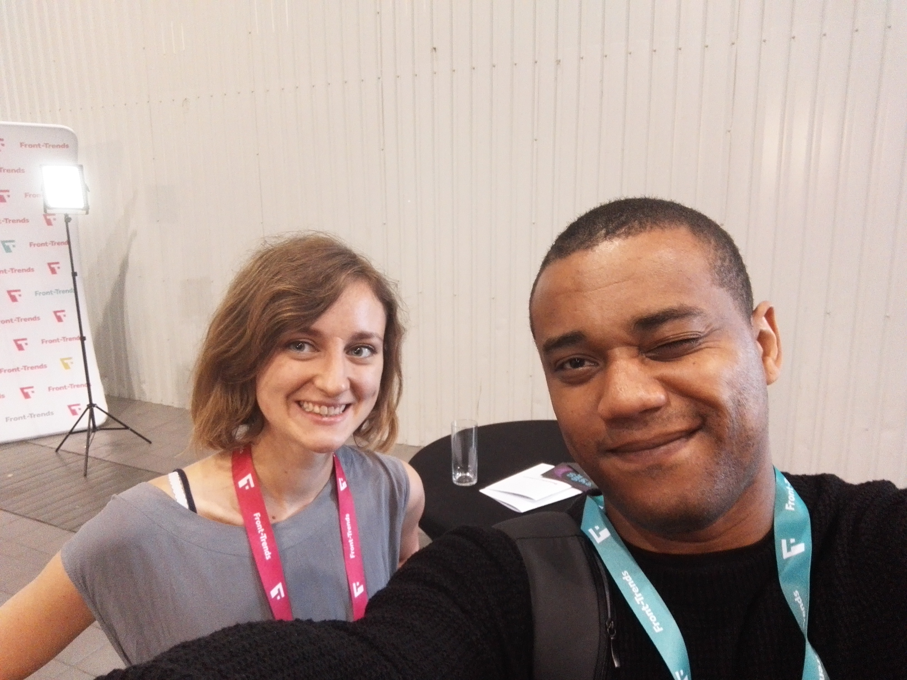
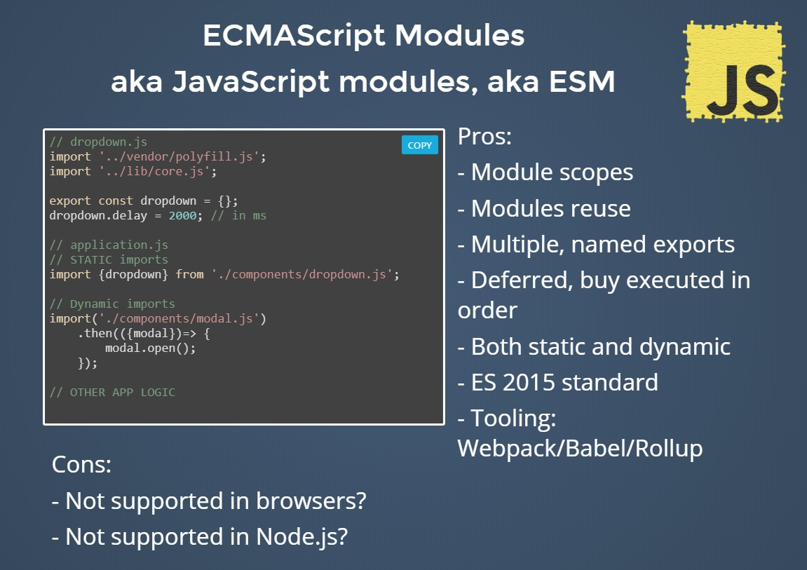
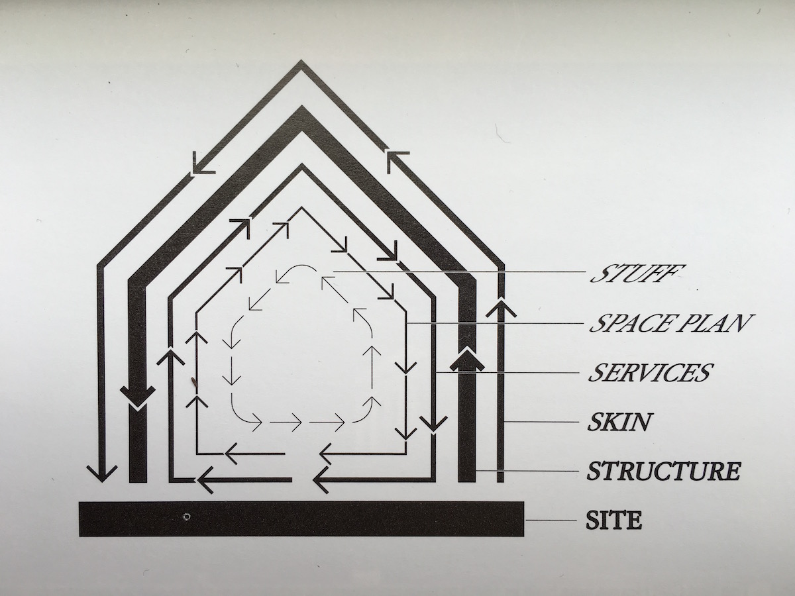

Front-trends.conf osalesin esimest korda. Tegu on ühe suurima Web Tehnoloogia üritusega. Osa võtsid tehnoloogia teemal tuntud esinejad, keda oli inspireeriv kuulata nt: Jeremy Keith (adactio), Serg Hospodarets, (Lead Front-End Developer based
in Dublin), Sarah Drasner (Senior Developer Advocate at Microsoft).
Lisi Linhart (One of The Front-Trends Speaker)

Maja Wichrowsaka
(frontend software engineer at Airbnb)
Sessioon oli huvitav, eriti neile keda puudutas React framework. Probleem, mis püstitati seisnes selles, et kuidas muuta Airbnb kasutajatele (UI) lehe paremalt vasakule lugemist nt:(Hebrew, Urdu, Arabic [Muide seda keelt räägitakse täna 60% maailmas]).
Sarah Drasner
Live and machine learn
Everything we see online is filtered.
what makes algorithms fail?
Live and machine learn
No transparancy
It doesn't adopt over time
it's used withpout questioning
The type of data we use is vital to the accuracy of our algorithms
Serg Hospodarets
Native JavaScript modules
ESM
ESM are "singletons"
They are loaded and executed only once
even if imported via different paths or methods

Serg Hospodarets
Native JavaScript modules
script tag support today
Sessioon meeldis mulle väga, kuna see oli hästi esitatud ning välja olid toodud webi suuremad põhitõed.
Uue tehnoloogia kasutusele võtmist tuleks valida targalt, kuna tulevikus see sama tehnoloogia võidakse tõenäoliselt asendada millegi muu vastu. Samas, kui kaugemale mõelda, siis alumine layer jääb alati, kuna ülemine layer täiustab pidevalt alumist layerit. Tuleks arvestada ning kaaluda pikaajaliste instrumentide kasutamist ehitamisel.

Each of the web’s shearing layers can be peeled back to reveal a layer below. Running that process in reverse—applying each layer in turn—is a key principle of resilient web design.
Loading performance is hightly connected to latency
(Latency: Latency is delay. Latency is how long it takes data to travel between its source and destination, measured in milliseconds.)
Kokkuvõtteks
Üritus oli väga inspireeriv, avas mõttemaailma ning innustas teadmisi rikastama.
Roland